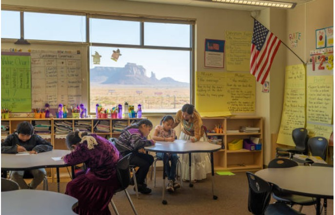

EducA+tors: Mapping Public School Funding and Educational Equity in the United States
Teacher Salaries, Retention, and Student Outcomes as Policy-Driven Indicators of Inequality
EducA+tors is a digital humanities project that examines how variations in public school funding across U.S. states influence teacher retention and student academic performance. Using historical and contemporary datasets from the National Education Association and state departments of education, the project analyzes changes in teacher salaries, state rankings, and percent salary growth from the 2021–22 to 2022–23 school years. Through interactive data visualization, GIS mapping, and narrative analysis, the project highlights systemic, policy-driven, and regional inequities in how states prioritize public education.

Introduction
Teachers shape the minds of growing generations, they provide for, question, guide, and in the end, mold children into the future professionals and citizens. Despite their significant role in the American educational system, teachers are consistently underappreciated and in most cases underpaid. Although average teacher salaries in the United States rose to $69,544 in 2023, this figure represents only a 2% increase over the past decade when adjusted for inflation, according to the National Education Association. In fact, teachers in over half the states have seen their real earnings decline since 2013, even as the cost of living—especially housing and healthcare—has risen sharply. This project investigates how these stagnating or declining real wages impact teacher retention, recruitment, and educational quality across different states. Additionally this project addresses the effects of teacher salary on student achievement and state ranking in education. Using data from the NEA’s 2024 Educator Pay Report and U.S. Census Bureau cost-of-living indices, this analysis compares states like Mississippi, where starting teacher pay remains among the lowest nationally, with states like Massachusetts, which offer higher salaries but face steep living costs, which can offset the benefits of a higher salary. Specific state ranking information is provided to the NEA from the state level education census’. These sources are critical for understanding how financial incentives—or the lack thereof—shape the teacher workforce. By using data from the NEA there is a more accurate comparison between salary and ranking because of the data specified by year. Using the year by year data a clear pattern and consistent phenomena can be deduced from the data, which is especially important since ideas regarding the relationship between funding and educational results have often been varied, with different groups attributing success and failure respectively to different factors. Additionally, this research will help us specify the tools needed to improve student outcomes throughout the country. By highlighting disparities in compensation and contextualizing them within broader economic conditions, this project argues that insufficient salary growth is undermining educational equity and student performance in underfunded regions.
Literature
Existing literature on teacher pay reveals a strong consensus that teacher pay disparities are both real and significant. Multiple studies documented that teachers earn 14% less than comparably educated professionals (Allegretto et al.) and low compensation harms teacher retention and recruitment. There is also agreement within the literature that school finance structures can impact teacher pay inequities, with property wealth–dependent funding systems advantaging wealthy districts while disadvantaging high-poverty areas (Baker & Weber, Brunner et al., Roza & Miles). Emerging evidence supports that school funding reforms can increase teacher salaries, though these benefits may take up to a decade to materialize (Nguyen et al., Jackson & Morgan). However, contradictions remain regarding whether increased funding automatically equates to higher teacher pay, as Haskinsworth-Lutzow & Rose found that even large revenue infusions to high-poverty districts did not lead to salary increases beyond recession recovery levels. Currently, limited research focuses on the relationship between teacher pay and education quality, with only García & Han demonstrating a positive correlation between higher teacher base salaries and student performance in math and English assessments.
 A classroom in the Navajo Nation.
Which U.S. regions have the highest and lowest median household incomes for families with public school children?

We chose a box plot for this visualization because it clearly highlights median household income, while also revealing outliers and regional patterns across the United States. This is important for our project, as we examine how median household income correlates with state education expenditures and, in turn, student outcomes. The visualization shows that the Northeast has the highest median household income overall, with the Middle Atlantic division (including New York, New Jersey, and Pennsylvania) ranking at the top. In contrast, the South has the lowest median household income, particularly the East South Central division (including Alabama, Kentucky, Mississippi, and Tennessee). These regional disparities underscore how economic conditions vary substantially across the country and help explain differences in educational funding and resources.
How did teacher salaries change across the United States from 2021–22 to 2022–23, and do states with lower average salaries tend to have higher percent increases in salary?

How do states differ in their expenditures for education?

This chart supports our project by highlighting each state’s public expenditures, which is a foundational factor in understanding educational funding disparities. States with higher total expenditures are not necessarily those with the highest teacher salaries or strongest education outcomes, highlighting that how funds are prioritized, not just how much they have, matters deeply. This visualization helps identify patterns in resource allocation that may correlate with regional trends in teacher pay and student performance. It reinforces the idea that systemic and policy-driven decisions shape public education funding across the U.S., contributing to unequal educational outcomes.
This data on regional household income and per state expenditures directly support the thesis by showing how broader economic and policy-driven disparities influence education funding. The Northeast, with the highest median household incomes, tends to allocate more resources toward public education, contributing to higher teacher salaries. In contrast, the South, particularly the East South-Central division, has the lowest household incomes, which correlates with lower public school teacher salaries and reduced education funding overall. This reveals systemic disparities in which students that have a lower median household income may consequently receive lower quality education. These patterns reveal how regional economic conditions can result in systemic inequities due to how states value public education.
Which state spent the longest total time on teacher‐salary legislation tasks between 2019 and 2024?

The Gantt chart displays the timeline of key legislative tasks—such as Preliminary Research, Draft Legislation, Committee Hearings, and Implementation Phases—for three states (Alabama, California, and New York). By noting the start and end dates of each task, we see which state took longer overall to enact teacher‐salary reforms. California appears to have some of the longest cumulative task durations, especially during Draft Legislation and Implementation. New York shows extended time spans during Committee Hearings and Review/Evaluation. Alabama has shorter durations in some phases but a lengthy Implementation window into 2024.
Why Might These Differences Exist? Legislative Complexity & Stakeholder Input: Longer durations can reflect complex negotiations.
Political & Economic Factors: Multiple committee reviews or separate House/Senate approvals can slow legislation (NEA, 2022). States under fiscal strain might need extra budget hearings, delaying passage.
Meaning Within the Project Context: Within our project on multi‐year teacher‐salary reforms, this Gantt chart highlights differences in how each state navigated the legislative process. A longer total duration may indicate more complex legislative procedures, prolonged committee debates, or staggered implementation timelines. Conversely, a shorter duration suggests a more streamlined or expedited approach. Understanding these disparities can inform policymakers and education stakeholders about potential bottlenecks or best practices when implementing multi‐year salary reforms.
Does Political Affiliation Correlate with Education Ranking and Teacher Salary?

This chart type was chosen for its clarity in allowing side-by-side comparison of performance disparities, making it easy to observe which states significantly exceed or fall below the national average. Each bar represents the deviation in average score from the national public school score baseline, allowing viewers to quickly identify geographic patterns and performance trends. The visualization shows how academic outcomes vary by state and relates to other financial data on state-level education funding.
This visualization relates to our project because performance gaps revealed in this chart suggest that educational outcomes are not solely determined by student ability or local conditions, but are linked to how much and how equitably states invest in their public education systems. States that underperform relative to the national average may also be those offering lower teacher salaries and allocating fewer resources to education overall, reinforcing systemic inequities. By combining salary data with performance metrics, this chart strengthens the argument that funding disparities contribute to uneven educational outcomes nationwide.
By comparing the Tableau visualizations of state-by-state teacher salary data and student performance metrics, patterns of the relationship between compensation, retention, and educational outcomes becomes apparent. The data reveals that states investing more in educator pay generally see higher student performance. For example, states like Massachusetts, Connecticut, Minnesota, and New Jersey rank within the top 10 in both teacher salary and average student scores. For each of these states, over 30% of their students are achieving proficiency or higher. These states also tend to experience higher stability and competitive recruitment, which likely contributes to continuing the cycle of having consistent educational quality and student success. On the other hand, states like Mississippi, New Mexico, and West Virginia appear on the lower end of the salary and performance spectrum, with low proficiency rates and average scores more than 10 points below the national average. It is also important to note that there were also some discrepancies found between salary increases and student achievement. For example, although New Mexico implemented a significant percent increase in salary, student scores did not reflect this as their performance did not rank in the top 10. This suggests that improvement in performance is not immediate and likely depends on factors such as how salary increases are impacted by broader systemic changes like training, resources, and school infrastructure. Overall, the data shows a moderate to strong positive trend between salary and performance. On average, higher salaries correlate with better performance from students. For example, there are some outliers like Florida that have relatively low salaries but mid range performance. This can be due to factors like cost of living, teacher-student ratios, and state education policy. Ultimately, supporting the conclusion that teacher salary is heavily correlated with educational performance. The outliers support our thesis that systemic inequities drive how states fund their educational systems, directly impacting student achievement and future success. As a result, if states want to improve student outcomes, they should consider investing more in teacher compensation.
Conclusion
While it may be easy to say that increasing salaries and funding will lead to better student outcomes, the truth is really not that simple. Increasing salaries, for example, is typically done in locations where the cost of living is increasing as well – so the benefit of a salary increase is offset. When it comes to political solutions, it appears that Democrat-run states tend to have better student outcomes, but they also tend to have wealthier students and populations, which is highly correlated with positive academic outcomes. Ultimately, the true cause of student achievement cannot be determined; but, some factors can be determined to affect student achievement, like the ones mentioned in this project: state funding, teacher salaries, and political alignment (of the state).